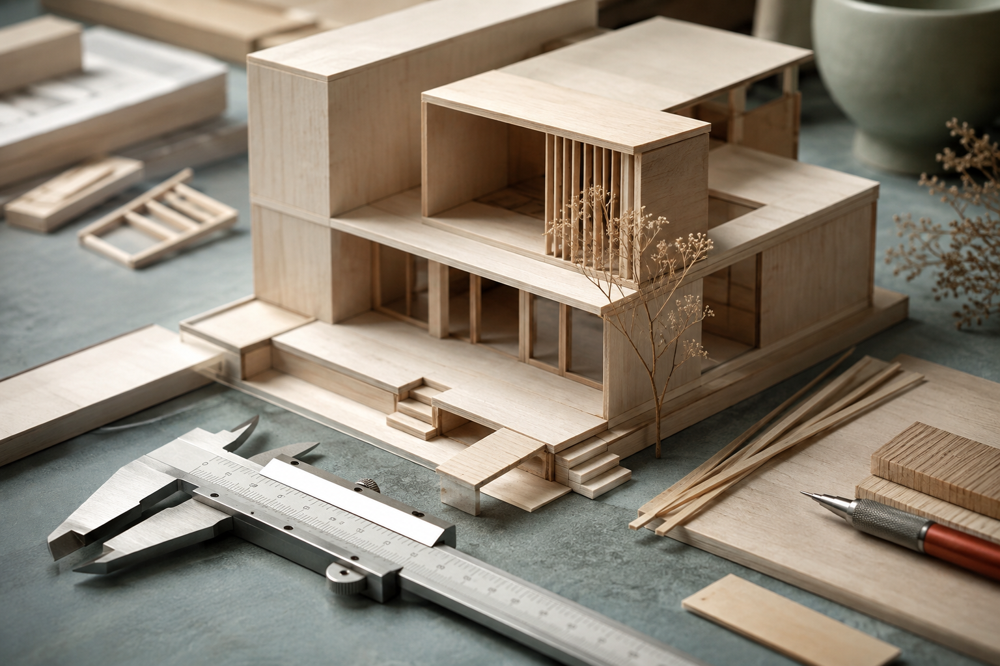

Project Review · Week 06Clearer Paths.
Clearer Paths.
Fewer Dead Ends.
A progress report built around outcomes, evidence, and the decisions that still need attention.
Where We Stand
Research100%
Design75%
Build50%
Validation25%
Four milestones per workstream: 4 + 3 + 2 + 1 accepted = 10 of 16. Percentages describe accepted milestones, not hours spent.
Evidence and Next Steps
| Outcome | Evidence | Next Step |
|---|---|---|
| Clearer navigation | Illustrative result: 8 of 10 participants found the path; replace with evidence | Validate on mobile |
| Faster first task | Timing evidence not supplied; baseline and measured median needed | Expand the sample |
| Ready for handover | Draft checklist reviewed by support | Confirm ownership |
